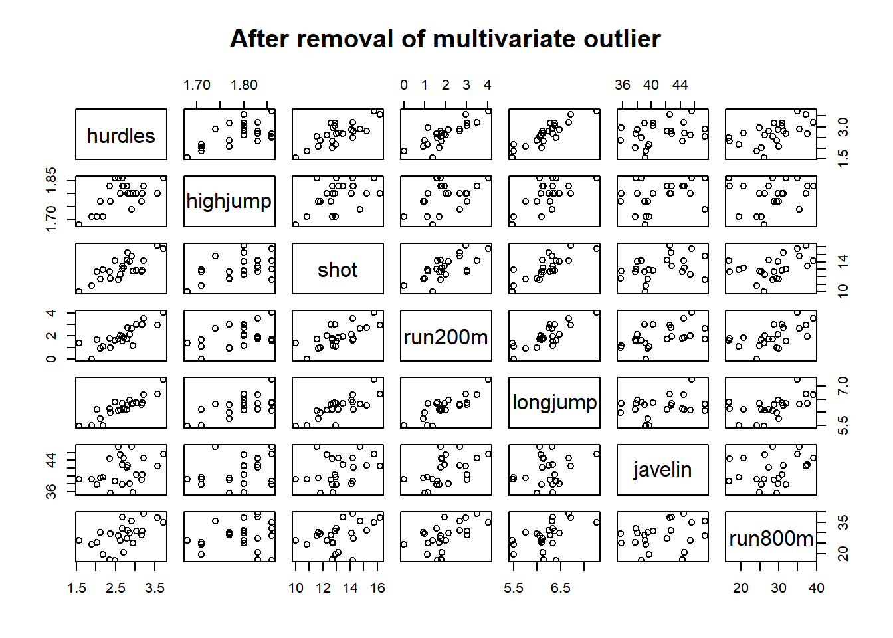

9 Heptathlon example
These are Olympic heptathlon data. Let’s use this as an example for a PCA. The steps in a PCA usually include the following, depending on our purpose:
- Perform data cleaning, to ensure the variables are in the logical direction and so forth
- Assessing the assumptions of linearity and multivariate normality and absence of outliers
- Fit the PCA model
- Determine the number of components to retain
- Refit the PCA model, using rotation if that is acceptable in your field
- Interpret the components
- Save the component scores if the intent is to use them for future analyses.
9.1 Data and data cleaning
## 'data.frame': 25 obs. of 9 variables:
## $ athlete : chr "Joyner-Kersee (USA)" "John (GDR)" "Behmer (GDR)" "Sablovskaite (URS)" ...
## $ hurdles : num 12.7 12.8 13.2 13.6 13.5 ...
## $ highjump: num 1.86 1.8 1.83 1.8 1.74 1.83 1.8 1.8 1.83 1.77 ...
## $ shot : num 15.8 16.2 14.2 15.2 14.8 ...
## $ run200m : num 22.6 23.6 23.1 23.9 23.9 ...
## $ longjump: num 7.27 6.71 6.68 6.25 6.32 6.33 6.37 6.47 6.11 6.28 ...
## $ javelin : num 45.7 42.6 44.5 42.8 47.5 ...
## $ run800m : num 129 126 124 132 128 ...
## $ score : int 7291 6897 6858 6540 6540 6411 6351 6297 6252 6252 ...Everitt and Hothorn (2011) reversed the scores of the events in which a lower score is a better score to make the direction of the scores consistent in terms of athletic performance.
dat <- hepdat %>%
mutate(hurdles = max(hurdles) - hurdles,
run200m = max(run200m) - run200m,
run800m = max(run800m) - run800m)I’m also going to save the variable names in case I need them because I’m too lazy to type them out.
9.2 Examine assumption of linearity
We can generate a scatterplot matrix using this simple code on the data with our variables.

The variables do not seem to show non-linear relationships. However, in many cells, except for in the javelin and shot-put events, there seems to be a single case that is an outlier. This might be the same athlete across events. I would guess that this athlete had a leg injury that prevented her from performing well in the events that required running.
9.3 Multivariate normality and outliers
Let’s examine the Mahalanobis distances to see if we can identify this and any other outlying cases:
varbs <- cbind(dat[, varbnames])
distances <- mahalanobis(varbs,
center = colMeans(varbs),
cov = cov(varbs))
dat$distances <- distances
# Let's check for those who exceed the p < .001 criterion:
dat$p <- pchisq(distances,
df = (ncol(varbs)-1), # df is number of variables - 1
lower.tail = FALSE)
dat$outlier <- ifelse(dat$p < .001, 1, 0)
# Temporarily sort the data by p-values and outlier status and get first n rows.
dat %>% arrange(desc(outlier), p) %>% slice_head(n = 5) ## athlete hurdles highjump shot run200m longjump javelin run800m score distances
## 1 Launa (PNG) 0.00 1.50 11.78 0.45 4.88 46.38 0.00 4566 18.828022
## 2 Joyner-Kersee (USA) 3.73 1.86 15.80 4.05 7.27 45.66 34.92 7291 10.153130
## 3 Yuping (CHN) 2.49 1.86 14.21 1.61 6.40 38.60 16.76 6087 10.101416
## 4 Hagger (GB) 2.95 1.80 12.75 1.14 6.34 35.76 24.95 5975 9.526282
## 5 Scheider (SWI) 2.57 1.86 11.58 1.74 6.05 47.50 28.50 6137 9.179544
## p outlier
## 1 0.004464155 0
## 2 0.118349731 0
## 3 0.120445638 0
## 4 0.146071466 0
## 5 0.163729573 0library(car)
car::qqPlot(distances,
distribution = "chisq", df = mean(distances),
lwd = 1,
grid = FALSE,
main = "Multi-normal Q-Q Plot on Residuals",
xlab = expression(chi^2 * " quantiles"),
ylab = expression("Mahalanobis distances "^2))## [1] 25 8We see that the 25th row in the data frame includes a case that is far above (or below) the rest. Let’s examine this row:
## athlete hurdles highjump shot run200m longjump javelin run800m score distances p
## 25 Launa (PNG) 0 1.5 11.78 0.45 4.88 46.38 0 4566 18.82802 0.004464155
## outlier
## 25 0It appears that the athlete from Papua New Guinea was the outlier, though not enough to merit removal because she was within the error band and did not have a statistically significant Mahalanobis distance from the rest. However, let’s follow the text’s example and remove this observation from the data. We can compare the results with and without this athlete in a sensitivity analysis if we were doing a complete analysis.
We should also perform a test of multivariate normality. With this small data set, it will likely not result in a statistically significant difference. Let’s get to the analysis and pretend we had done that part.
9.4 Re-examine linearity and normality

The scatterplots show that the removal of this outlier resulted in scatterplots with data that are dispersed across the ranges of the variables. Linearity seems to hold.
varbs <- cbind(dat[, varbnames])
distances <- mahalanobis(varbs,
center = colMeans(varbs),
cov = cov(varbs))
dat$distances <- distances
library(car)
car::qqPlot(distances,
distribution = "chisq", df = mean(distances),
lwd = 1,
grid = FALSE,
main = "After removal of multivariate outlier",
xlab = expression(chi^2 * " quantiles"),
ylab = expression("Mahalanobis distances "^2))
## [1] 8 15The Q-Q plot of the multivariate distances suggested that the cases are arguably not violating the assumption of multivariate normality.
9.5 Fit the initial PCA
fit.pca <- psych::pca(dat[ ,varbnames],
nfactors = length(varbnames),
rotate = "none" )
print( fit.pca, digits = 2)## Principal Components Analysis
## Call: principal(r = r, nfactors = nfactors, residuals = residuals,
## rotate = rotate, n.obs = n.obs, covar = covar, scores = scores,
## missing = missing, impute = impute, oblique.scores = oblique.scores,
## method = method, use = use, cor = cor, correct = 0.5, weight = NULL)
## Standardized loadings (pattern matrix) based upon correlation matrix
## PC1 PC2 PC3 PC4 PC5 PC6 PC7 h2 u2 com
## hurdles 0.94 -0.05 -0.16 -0.03 -0.11 -0.29 -0.02 1 3.3e-16 1.3
## highjump 0.65 0.62 -0.19 0.38 0.04 0.03 0.09 1 1.7e-15 2.9
## shot 0.84 0.02 -0.14 -0.37 0.37 0.03 0.06 1 1.2e-15 1.9
## run200m 0.89 -0.18 0.12 -0.16 -0.34 0.11 0.12 1 1.6e-15 1.6
## longjump 0.94 0.02 -0.25 0.01 -0.07 0.13 -0.20 1 1.2e-15 1.3
## javelin 0.50 0.31 0.80 -0.04 0.04 -0.02 -0.06 1 5.6e-16 2.1
## run800m 0.63 -0.62 0.18 0.39 0.17 0.02 0.02 1 4.4e-16 3.0
##
## PC1 PC2 PC3 PC4 PC5 PC6 PC7
## SS loadings 4.32 0.90 0.83 0.47 0.30 0.11 0.07
## Proportion Var 0.62 0.13 0.12 0.07 0.04 0.02 0.01
## Cumulative Var 0.62 0.75 0.86 0.93 0.97 0.99 1.00
## Proportion Explained 0.62 0.13 0.12 0.07 0.04 0.02 0.01
## Cumulative Proportion 0.62 0.75 0.86 0.93 0.97 0.99 1.00
##
## Mean item complexity = 2
## Test of the hypothesis that 7 components are sufficient.
##
## The root mean square of the residuals (RMSR) is 0
## with the empirical chi square 0 with prob < NA
##
## Fit based upon off diagonal values = 19.6 Determine the number of components to retain
## PC1 PC2 PC3 PC4 PC5 PC6 PC7
## SS loadings 4.3236422 0.8989944 0.8297417 0.46675769 0.29832218 0.11387578 0.068666022
## Proportion Var 0.6176632 0.1284278 0.1185345 0.06667967 0.04261745 0.01626797 0.009809432
## Cumulative Var 0.6176632 0.7460909 0.8646255 0.93130515 0.97392260 0.99019057 1.000000000
## Proportion Explained 0.6176632 0.1284278 0.1185345 0.06667967 0.04261745 0.01626797 0.009809432
## Cumulative Proportion 0.6176632 0.7460909 0.8646255 0.93130515 0.97392260 0.99019057 1.000000000We see that the first variable explained 62% of the variance in the seven events. the second and third components explained an additional 13% and 12% each, whereas the fourth component only explained about 7% of the variation. With this, it may be worthwhile to retain the first three components. Let’s look at the eigenvalues, the scree plot, and the parallel analysis results.
Looking at the output, where it says SS loadings, we can see the eigenvalues. Based on this solution, if we were to follow the Kaiser rule of eigenvalues \(\ge 1\), a single component stands out above the rest. We wanted, we could verify this with the eigen() function.
## eigen() decomposition
## $values
## [1] 4.32364217 0.89899445 0.82974172 0.46675769 0.29832218 0.11387578 0.06866602
##
## $vectors
## [,1] [,2] [,3] [,4] [,5] [,6] [,7]
## [1,] -0.4503876 0.05772161 -0.1739345 -0.04840598 -0.19889364 0.84665086 -0.06961672
## [2,] -0.3145115 -0.65133162 -0.2088272 0.55694554 0.07076358 -0.09007544 0.33155910
## [3,] -0.4024884 -0.02202088 -0.1534709 -0.54826705 0.67166466 -0.09886359 0.22904298
## [4,] -0.4270860 0.18502783 0.1301287 -0.23095946 -0.61781764 -0.33279359 0.46971934
## [5,] -0.4509639 -0.02492486 -0.2697589 0.01468275 -0.12151793 -0.38294411 -0.74940781
## [6,] -0.2423079 -0.32572229 0.8806995 -0.06024757 0.07874396 0.07193437 -0.21108138
## [7,] -0.3029068 0.65650503 0.1930020 0.57418128 0.31880178 -0.05217664 0.07718616To continue the exercise, we can also examine the scree plot and conduct a parallel analysis. Before, we used the parallel() function from the nFactors package to conduct the parallel analysis. That is a better method for reporting, as we can be certain about the 95% cutoff. Another, much easier, option is to use the fa.parallel() function from the psych package. Because we’re using principal components analysis (not factor analysis), we need to specify the model using the argument fa = "pc". We’ll also specify the number of factors as the same as the number fo variables.
set.seed(123) # To reproduce our randomly generated results.
para.psych <- psych::fa.parallel(dat[,varbnames],
fa = "pc",
nfactors = length(varbnames))
## Parallel analysis suggests that the number of factors = NA and the number of components = 1These results clearly indicate that we can reduce the number of dimensions from seven to 1. To be sure, we should examine the 95 percentile with nFactors package’s parallel() function results.
library(nFactors)
n_i <- nrow(dat) # The number of cases in our data
n_p <- length(varbnames) # The number of variables in our data
set.seed(456) # To reproduce our randomly generated results.
Eigs <- fit.pca$values # The eigenvalues
n_components <- length(Eigs) # number of components
paral <- parallel(subject = n_i, # The number of cases in our data
var = n_p, # The number of variables in our data
rep = 100,
quantile = .95,
model = "components")
ParallelAna <- data.frame(Ncomponent = 1:n_components,
Eigs,
RandEigM = paral$eigen$mevpea,
RandEig95= paral$eigen$qevpea)
ParallelAna <- round(ParallelAna, 3)
ParallelAna## Ncomponent Eigs RandEigM RandEig95
## 1 1 4.324 1.857 2.242
## 2 2 0.899 1.447 1.639
## 3 3 0.830 1.161 1.313
## 4 4 0.467 0.940 1.063
## 5 5 0.298 0.748 0.873
## 6 6 0.114 0.528 0.680
## 7 7 0.069 0.318 0.505This code here might be easier to read, though less reproducible. I also changed the repetitions to 1000 to get a more stable result (though the conclusion is the same).
set.seed(994)
paral <- nFactors::parallel(subject = 24, # The number of cases
var = 7, # The number of variables
rep = 1000,
quantile = .95,
model = "components")
ParallelAna <- data.frame(Ncomponent = 1:7, # We have 7 components
Eigs,
RandEigM = paral$eigen$mevpea,
RandEig95= paral$eigen$qevpea)
ParallelAna <- round(ParallelAna, 3)
ParallelAna## Ncomponent Eigs RandEigM RandEig95
## 1 1 4.324 1.862 2.242
## 2 2 0.899 1.446 1.683
## 3 3 0.830 1.165 1.330
## 4 4 0.467 0.938 1.075
## 5 5 0.298 0.734 0.880
## 6 6 0.114 0.540 0.696
## 7 7 0.069 0.315 0.513This result does suggest that at the second component, the randomly generated eigenvalue at the 95 percentile (1.639) exceeds that of our second observed eigenvalue of 0.899.
9.7 Refit the PCA model, using rotation if that is acceptable in your field
Let’s refit the PCA model to have a single component. If we had a solution with more than two components, we could use rotation, such as with rotate = "varimax". Here, rotation does not matter because there is a single component.
fit.pca1 <- psych::pca(dat[ ,varbnames],
nfactors = 1,
rotate = "varimax",
scores = TRUE)
print( fit.pca1, digits = 3)## Principal Components Analysis
## Call: principal(r = r, nfactors = nfactors, residuals = residuals,
## rotate = rotate, n.obs = n.obs, covar = covar, scores = scores,
## missing = missing, impute = impute, oblique.scores = oblique.scores,
## method = method, use = use, cor = cor, correct = 0.5, weight = NULL)
## Standardized loadings (pattern matrix) based upon correlation matrix
## PC1 h2 u2 com
## hurdles 0.937 0.877 0.123 1
## highjump 0.654 0.428 0.572 1
## shot 0.837 0.700 0.300 1
## run200m 0.888 0.789 0.211 1
## longjump 0.938 0.879 0.121 1
## javelin 0.504 0.254 0.746 1
## run800m 0.630 0.397 0.603 1
##
## PC1
## SS loadings 4.324
## Proportion Var 0.618
##
## Mean item complexity = 1
## Test of the hypothesis that 1 component is sufficient.
##
## The root mean square of the residuals (RMSR) is 0.099
## with the empirical chi square 9.812 with prob < 0.776
##
## Fit based upon off diagonal values = 0.979.8 Interpret the components
After examining the size of the eigenvalues, the scree plot, and the parallel test, we concluded that the eight variables can be reduced to a single dimension, which explains 62% of the variability in the observed variables. It appears as though all of the events contributed to this component. Particularly influential were the long jump and hurdles, with coefficients exceeding .90. The 200 meter race and the shot put also had strong influence on the component, with coefficients in the .80 to .89 range. The Javelin contributed least strongly to the component score.
9.9 Saving the scores
We had asked for scores = TRUE when fitting the one-component model. We can attach the scores to the data frame.
Let’s merge the scores into the dat dataframe so we can compare the component score with the scores allotted in the competition.
Let’s examine the correlation between the component score and the observed score from the competition:
## C.score score
## C.score 1.0000000 0.9931168
## score 0.9931168 1.0000000We have good evidence to support the assertion that the final score used in the competition reflected the principal sources of variability in among the seven events.